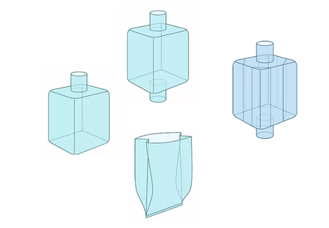

.png)
LINERS DE PE
Los Liners o revestimiento interior de polietileno proporcionan una solución adecuada para mercaderías que requieren un alto grado de pureza y conservación.
El forro interior de PE cubre internamente los embalajes flexibles, impidiendo que el producto entre en contacto con la tela o las costuras.
Para el caso de líquidos o materiales pulverulentos muy pequeños, el sellado a prueba de polvo no suele ser suficiente, en cuyo caso, se utilizan revestimientos internos anti fugas.
Los Liners Preformados pueden tener sistemas de carga y descarga respetando la forma del Big Bag en sus válvulas,lo cual permite un mejor flujo al cargue y descargue del material.
El grosor o espesor del revestimiento interior liner, puede ser de 60 a 120 micrones (my), por lo general es de 80 my para Big Bags de más de 1000 kg.
El material es 100% LDPE virgen , generalmente el liner interior suele ser transparente, pero también puede ser azul o de otros colores.
Quiénes lo usan
El uso de las bolsas de tela de polipropileno es tan amplio debido a que existe un tipo, para cada necesidad, debido a que este tejido permite envasar la más variada gama de productos:
- Conservación intacta de productos, resguardando a la mercadería de contaminaciones externas
- Bloquea la fuga de gases
- Evita el ingreso de humedad y oxígeno
- Control absoluto sobre olores y aromas
- Anti-estático o conductor para evitar la acumulación electrostática
- Alta resistencia a la tracción
- Resistente a altas temperaturas
- Protección UV y control de aromas
- Cumple con los requisitos de higiene
- De acuerdo a necesidad, puede contar con válvula para vacío
Como Barrera
Para extender la vida útil del producto envasado, evitar contaminación, los liners pueden estar compuestos por materiales de baja o alta barrera según sea necesario:
- Baja barrera:Para productos que deben conservarse por cortos períodos de tiempo, en este caso se opta por utilizar polietileno ó Liner de Barrera Tricapa, para protegerlo de la humedad y contaminación exterior. En resumen con éste tipo de liner se prolonga su vida útil debido a que la mercadería será utilizada en un lapso de tiempo corto.
- Alta barrera: Las mercaderías que requieran ser preservadas impedir transferencias con el ambiente, deben protegerse con materiales de alta barrera. .Al contarse con una alta barrera por ejemplo al oxígeno y al anhídrido carbónico o contra la luz. Las industrias alimenticia, la agrícola y farmacéutica requieren de este tipo de liner preformados de alta barrera.